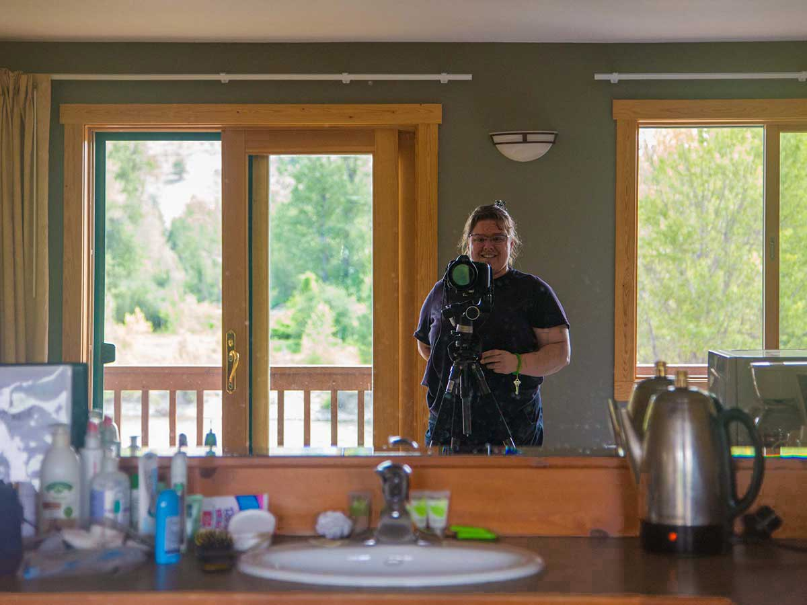
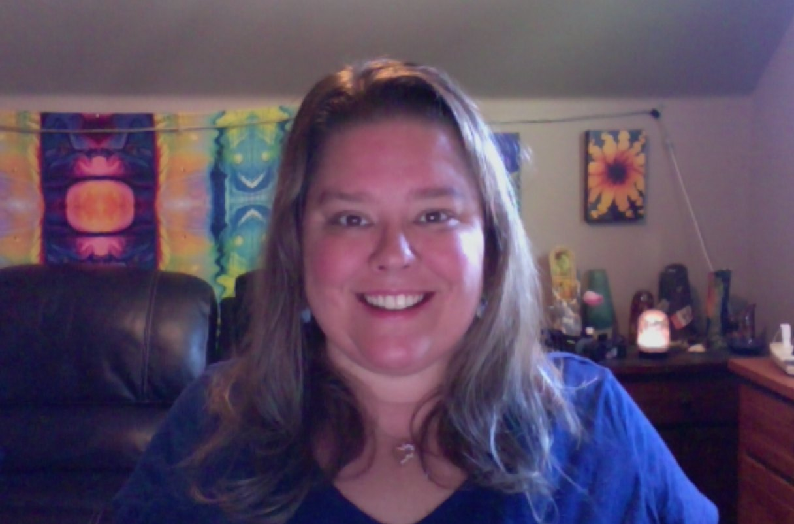
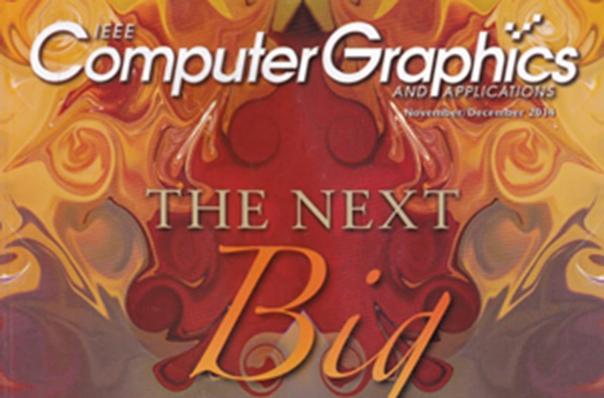
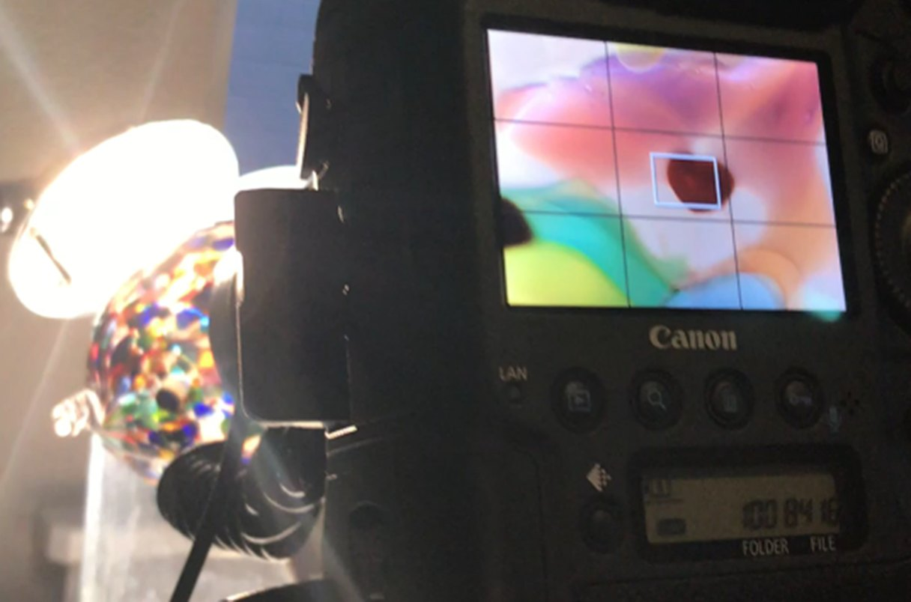

Stories · · Omaste Witkowski
About & Welcome

Welcome to the Artworks Art Gallery!
My name is Omaste Witkowski and I founded Artworks in 2012 to help people quickly and easily find unique, top quality and affordable artwork to fit any design and/or style.
My mission is to help interior designers, homeowners and decorators create unique and memorable spaces.
I specialize in virtual interior services, custom pieces, and artwork curation for any interior design style.
Free consultations are always available online, and onsite locally in the Boise, Idaho and Treasure Valley area.
On Location at the Hotel Rio Vista, Winthrop Wa
Background
My work with Photography began as a hobby in high school, continued into college as a hobby. After school, I began professional photography work in the building and interior design industries with Architectural and Interior Design projects. This work has been featured in Architectural Digest, Fine Homebuilding, Green Building and other Building industry publications.
The fusion of art and photography that you see in these galleries began in the beautiful Methow Valley with landscapes, outdoor photos and macro studies. Then continued onto an abstract path one long winter with a Macro lens and some glass art pieces and hasn’t stopped since.
My work has been featured in Art Galleries, Corporate settings, Hotels, Rental Properties, individual homes, on many industry and commercial websites, including Houzz and in the Computer Graphics and Animations magazine.
Creating beautiful images that complement, enhance and improve interior spaces is my goal with each and every piece.
Inspiration

I have been drawing, painting, photographing and enjoying art in any and every way I can since I was a child.
My work is a direct fusion of light, spirituality and technology that has always been inspired by what is visible AND invisible to the eye, and that which is elemental to surviving, thriving and transforming.
Career Highlights

I started creating art pieces for interior designs and home decor in 2012 and had my first gallery show in November of that year. This first experience was successful and I was hooked.
After this one, I had more gallery shows, interior design collaborations, local business partnerships, corporate art installations, custom home interiors, business shows, magazine spreads, Houzz: art, photography and design awards, and more.
Techniques

Digital photography is the foundation of most of the work here in the store. Some photographs have been left directly from the camera and some have up to 50+ layers of edits including filters, brushes and shapes.
Line art is the other style here and was created on an iPad using various pens, pencils and brushes.
Find your own piece with the art adventure · Ask the gallery what fits your wall